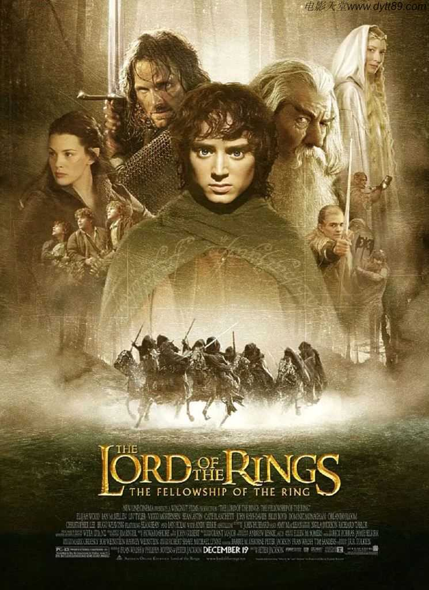
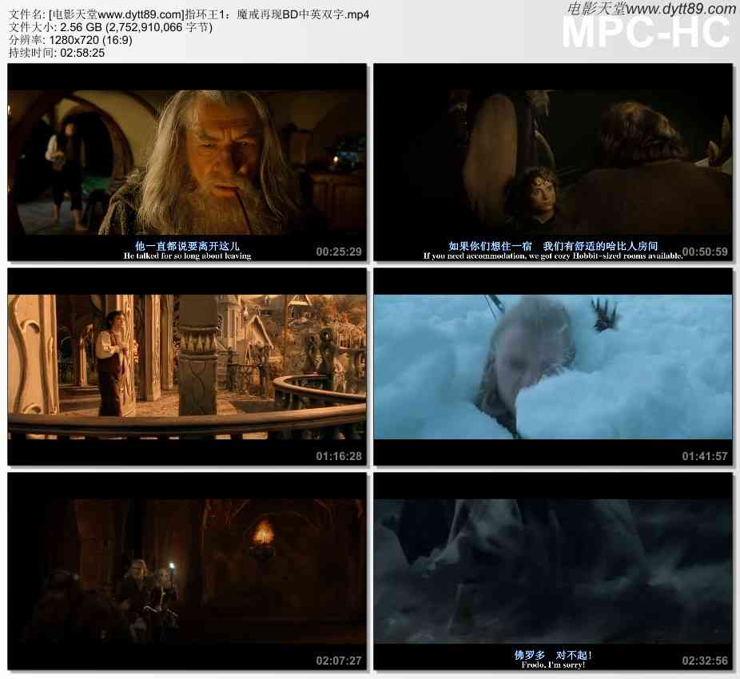

指环王1：魔戒再现BD双语双字
片名：指环王1：魔戒再现
发布时间：2021-04-24
指环王1：魔戒再现迅雷下载地址和剧情：
◎译 名 魔戒首部曲：魔戒现身/指环王I：护戒使者/魔戒1：护戒联盟
◎片 名 The Lord of the Rings: The Fellowship of the Ring
◎年 代 2001
◎产 地 新西兰/美国
◎类 别 剧情/动作/奇幻/冒险
◎语 言 英语/辛达林语
◎字 幕 中英双字幕
◎上映日期 2002-04-04(中国大陆)/2001-12-19(美国)
◎豆瓣评分 9.0/10 from 561808 users
◎IMDb评分 8.8/10 from 1607035 users
◎文件格式 x264 + ACC
◎视频尺寸 1280 x 720
◎文件大小 2752 MB
◎片 长 179 Mins
◎导 演 彼得·杰克逊
◎主 演 伊利亚·伍德
西恩·奥斯汀
伊恩·麦克莱恩
奥兰多·布鲁姆
维果·莫腾森
多米尼克·莫纳汉
比利·博伊德
克里斯托弗·李
马尔顿·索克斯
梅根·爱德华兹
伊安·霍姆
Michael Elsworth
凯特·布兰切特
阿兰·霍华德
马克·弗格森
肖恩·宾
萨拉·贝克
Noel Appleby
劳伦斯·马克奥雷
安迪·瑟金斯
彼得·麦肯齐
Sarah McLeod
伊恩·穆内
克雷格·帕克
卡梅隆·罗德
约翰·瑞斯-戴维斯
Martyn Sanderson
Harry Sinclair
丽芙·泰勒
大卫·韦瑟莱
雨果·维文
菲利普·格里夫
威廉·约翰逊
伊丽莎白·穆迪
布莱恩·瑟金特
Gino Acevedo
Jarl Benzon
Jørn Benzon
Ben Britton
杰德·布罗菲
诺曼·凯茨
兰德尔·威廉·库克
萨比恩·克洛森
西奥沙福瓦
本·弗兰舍姆
Jonathan Harding
Taea Hartwell
彼得·杰克逊
Sam Kelly
艾伦·李
◎标 签 电影天堂|经典电影|新西兰|美国|2001|TOP250部经典电影|TOP250之NO.57|剧情|动作|奇幻|冒险
◎简 介
比尔博·巴金斯是100多岁的哈比人，住在故乡夏尔，生性喜欢冒险，在年轻时的一次探险经历中，他从怪物咕噜手中得到了至尊魔戒，这枚戒指是黑暗魔君索伦打造的至尊魔戒，拥有奴役世界的邪恶力量，能够统领其他几枚力量之戒，在3000年前的人类联盟和半兽人大军的战役中，联盟取得了胜利，并得到了至尊魔戒，数千年的辗转后，魔戒落到咕噜手中，被比尔博碰巧得到。
因为和魔戒的朝夕相处，比尔博的心性也受到了影响，在他111岁的生日宴会上，他决定把一切都留给侄子佛罗多(伊莱贾?伍德 饰)，继续冒险。
比尔博的好朋友灰袍巫师甘道夫（伊恩?麦凯伦 饰）知道至尊魔戒的秘密，同时，黑暗魔君索伦已经知道他的魔戒落在哈比族的手中。索伦正在重新建造要塞巴拉多，集结无数的半兽人，准备以大军 夺取魔戒，并且征服全世界。
甘道夫说服佛罗多将魔戒护送到精灵王国瑞文希尔，佛罗多在好朋友山姆、皮平和梅利的陪同下，在跃马旅店得到了刚铎王子阿拉贡的帮助，历经艰难，终于到达了精灵王国。
然而，精灵族并不愿意保管这个邪恶的至尊魔戒，中土各国代表开会讨论，达成意见，准备将至尊魔戒送到末日山脉的烈焰中彻底销毁，佛罗多挺身而出接受了这个任务，这次，陪伴他的除了三个好朋友，还有甘道夫、阿拉贡、精灵莱戈拉斯（奥兰多?布鲁姆 饰）、人类博罗米尔、侏儒金利。
一路上，魔戒远征军除了要逃避索伦爪牙黑骑士和半兽人的追杀之外，更要抵抗至尊魔界本身的邪恶诱惑，前途困难重重。
◎获奖情况
第74届奥斯卡金像奖(2002)
最佳影片(提名) 巴里·M·奥斯本/彼得·杰克逊/弗兰·威尔士
最佳导演(提名) 彼得·杰克逊
最佳改编剧本(提名) 菲利帕·鲍恩斯/彼得·杰克逊/弗兰·威尔士
最佳摄影 安德鲁·莱斯尼
最佳剪辑(提名) 约翰·吉尔伯特
最佳视觉效果 吉姆·瑞吉尔 / 兰德尔·威廉·库克/理查德·泰勒/Mark Stetson
最佳音响(提名) Gethin Creagh/哈蒙德·匹克/克里斯托弗·博伊斯/迈克尔·斯曼内科
最佳艺术指导(提名) 格兰特·梅杰/丹·汉纳
最佳服装设计(提名) 恩吉拉·迪克森/理查德·泰勒
最佳化妆 Peter Owen/理查德·泰勒
最佳原创配乐 霍华德·肖
最佳原创歌曲(提名) 恩雅/Nicky Ryan/Roma Ryan
第59届金球奖(2002)
电影类 最佳剧情片(提名)
电影类 最佳导演(提名) 彼得·杰克逊
电影类 最佳原创配乐(提名) 霍华德·肖
电影类 最佳原创歌曲(提名) 恩雅
第26届日本电影学院奖(2003)
最佳外语片(提名)
第2届美国电影学会奖(2001)
年度佳片
◎电影讲堂
影片根据托尔金畅销全球的经典小说《指环王三部曲》改编，并以三部曲的方式拍摄。导演彼得·杰克逊是个魔戒迷，早在开拍1996年彼得·杰克逊就开始筹划《指环王三部曲》的拍摄工作，光编写剧本就花费了3年。作为一部魔幻电影，《指环王三部曲》的电影特效是拍摄过程中最引人关注的。影片运用各种传统方法和电脑特效，将原书中充满神秘色彩的奇幻世界展现在观众眼前，尤其是那些生活在其中的各色各样的生物。为了营造一个真实的“中土世界”，彼得·杰克逊在影片开拍前2年就要求造景专家在预先设定的场景前种植各种树木花草，甚至还搭建起了小桥流水等辅助景观。当演员们来到外景地时，都被眼前犹若奇幻的境地所震撼。影片剧组动用120名成员组成的团队，并将其分为奇幻生物、特效、化妆、盔甲及武器、微缩模型、模型特效六个小组。
在影片开拍前，新西兰一个毛利部落的长老为摄制组举行了宗教仪式，祝福摄制工作顺利完成。
影片拍摄中涉及到战争场面时，导演本想从新西兰军队征用15000名群众演员，没想到当时士兵们都被派到东帝汶平息当地的内战去了。导演只好到处张贴广告，招募会骑马的年轻人充当临时演员。
莱格拉斯在原著中并不引人注目，没想到预告片中的唯一一个镜头就让他大出风头，成了网友们热烈讨论的对象，很多人打听那个预告片中酷毙了的弓箭手是谁。于是三部曲中他耍帅的镜头一集比一集多。
饰演精灵王子莱格拉斯的奥兰多·布鲁姆花了2个月来学习射箭。
丽芙·泰勒有一次把她的假耳朵落在自己的轿车里，结果回来的时候它们融化了。
为了扮演山姆，西恩·奥斯汀增肥30磅。
导演彼得·杰克逊的两个孩子在片中出现，字幕中打出的是“可爱的霍比特小孩”。
维果·莫特森能说包括西班牙语、丹麦语在内的多种语言，他主动要求把阿拉贡的更多台词改成精灵语。
魔戒护卫队的九个成员在拍摄完成后分别在身上纹了精灵语“九”的纹身。
◎影片评价
传说的开始。
不平凡的视觉特效，堂而皇之地艺术构思，出色地影片制作。这是一个霍比特人的梦想和一个精灵的喜悦。而且这仅仅是个开始，才是系列电影的第一部。影片是一场美妙奇异的梦幻之旅，观看电影后不禁都沉浸在托尔金的作品所营造中土世界当中。
◎影片截图

下载地址列表::点击下方荐片链接即可下载 本站专属下载器 专治迅雷无法下载
下载地址列表::由于迅雷不停封此下载链接，此链接已经更换成本站独家高速下载器，保证速度超级快 本站专用电影下载地址：www.jianpian.com！
magnet:?xt=urn:btih:a211379a9a3daa8fc1f4a74cb57a762c4de86891&dn=[电影天堂www.dytt89.com]指环王1：魔戒再现BD中英双字.mp4magnet:?xt=urn:btih:256f64420a4c732ce1cb9785f6ad52d4fc0949d5&dn=[电影天堂www.dytt89.com]指环王1：魔戒再现-2001_BD国英双语中英双字.mp4请把www.dvdqvod.cn分享给你的朋友,更多人使用,速度更快 DVDwww.dvdqvod.cn欢迎你每天来！